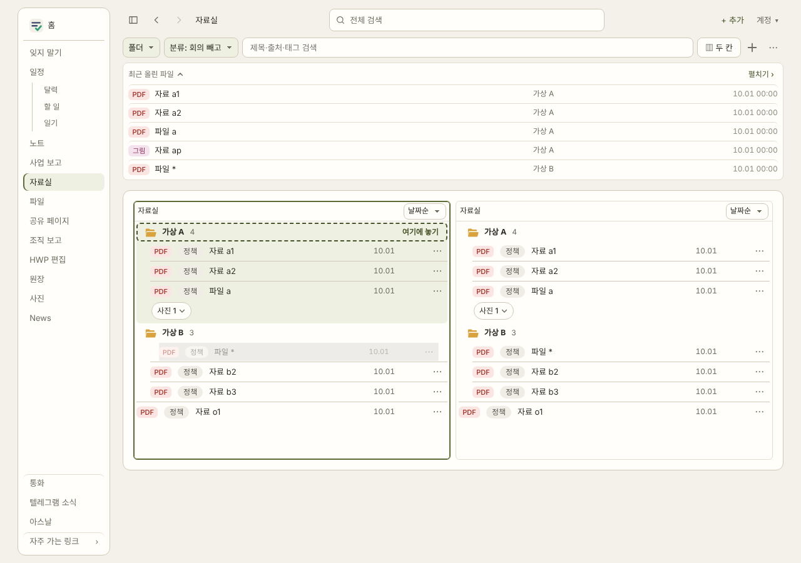
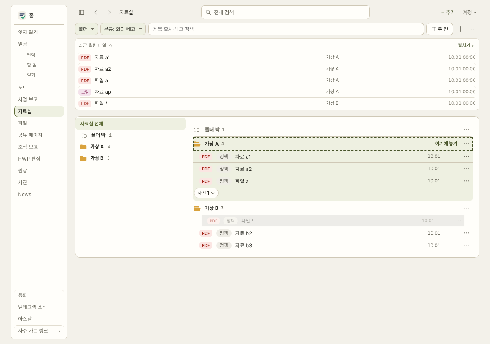
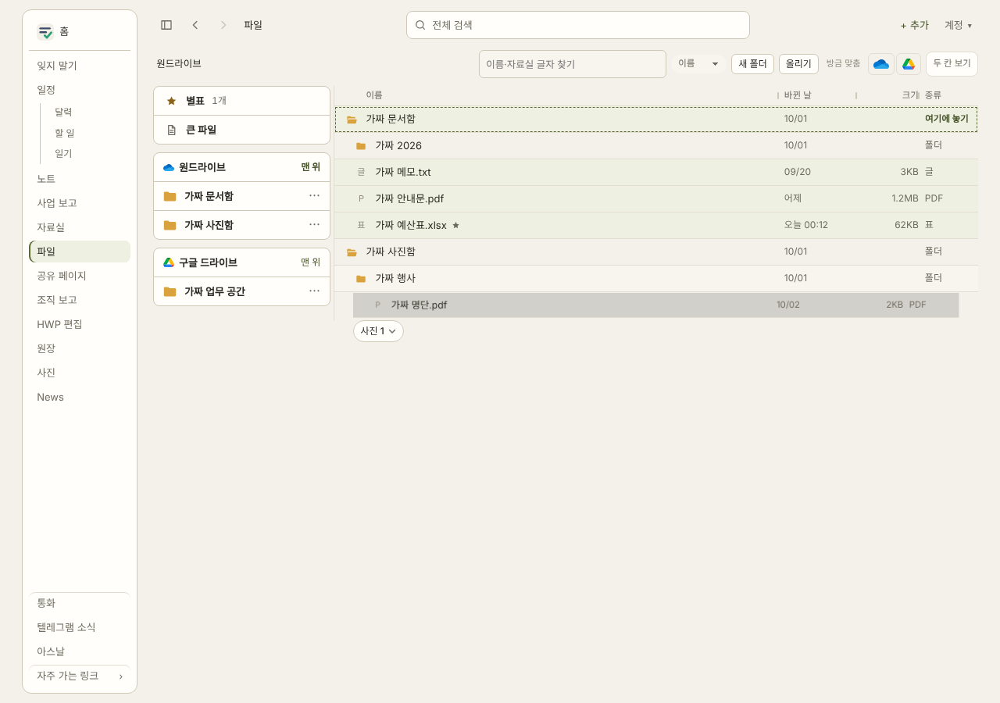
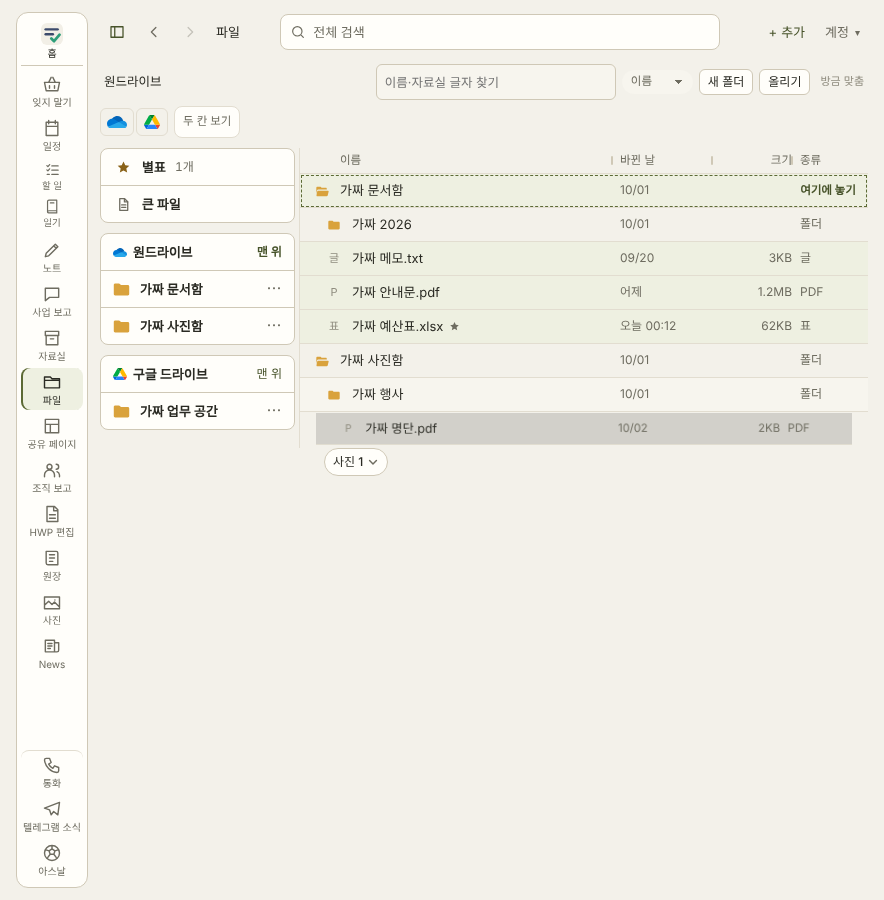
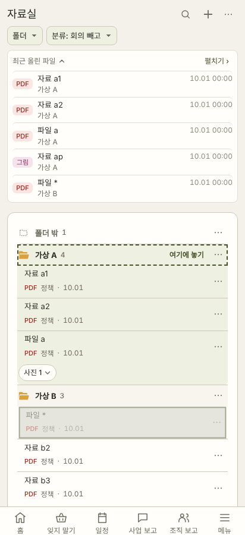
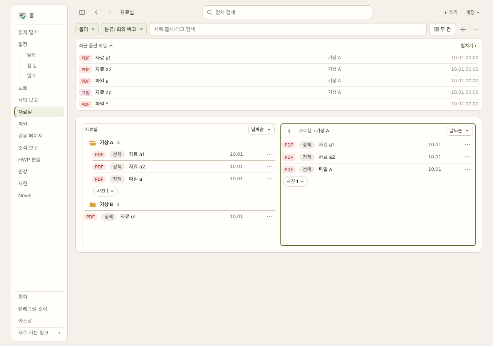

판정(놓으면 그 폴더로)은 시안과 상관없이 이 PR에 들어 있다. 고를 것은 끄는 동안 보이는 표시 모양뿐이다.
PC 1280 자료실 두 칸 — '파일 *'를 '파일 a' 위로 끄는 중

PC 1280 자료실 한 칸

PC 1280 [파일] 목록

폴드 884 [파일] 목록

폰 412 자료실 — 길게 눌러 끄는 중

LIB-두칸아래여백 — PC 1280 자료실 두 칸(두 칸 높이 같음, 아래 약 60px)
